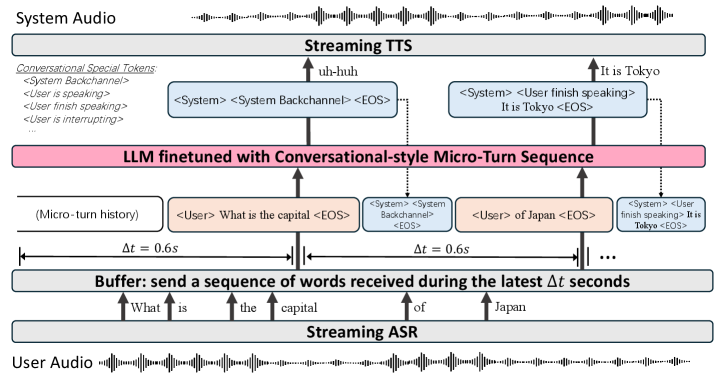
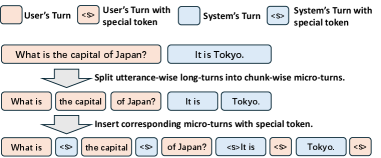
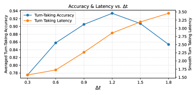

DuplexCascade 架构解析 — SB Intuitions / arXiv 2603.09180, 2026.03
全双工语音对话 · 无 VAD · 微轮次 · 控制 token · 级联 ASR-LLM-TTS
源码：github.com/sbintuitions/DuplexCascade · 论文：arxiv.org/abs/2603.09180
术语速查
全双工（Full-Duplex）
双方可以同时说话和听，就像真人面对面聊天。对比"半双工"：一方说完另一方才能说（对讲机模式）。
VAD（语音活动检测）
Voice Activity Detection，检测"用户是否在说话"的模块。传统方案靠它判断用户说完了没有。本文的核心创新就是去掉 VAD，改由 LLM 自己判断。
微轮次（Micro-Turn）
每 0.6 秒把 ASR 识别到的文字打包成一个小片段，送给 LLM。不再等用户说完整句话才处理，而是边听边想。
控制 token
一组特殊标记（如 <user is speaking>），LLM 输出它们来控制自己的行为：继续等、开口回复、发出"嗯嗯"、或停下来让用户打断。
级联（Cascaded）
ASR → LLM → TTS 三个独立模块串成管线，每个模块可以单独替换升级。对比"端到端"：一个大模型直接吃音频吐音频。
Backchannel（附和）
对话中的"嗯""对""是的"——不是正式回复，只是表示"我在听"。人类对话中平均每 10 秒就会有一次。
LoRA（低秩微调）
一种轻量训练方法：冻结大模型的大部分参数，只训练一小部分"适配层"。本文用 LoRA 让 Qwen2-7B 学会控制 token，只需 8 张 H100 训 5 小时。
TOR（接管率）
Take-Over Rate，衡量系统在各种场景下是否正确地"抢话"或"沉默"。不同场景方向不同：该沉默时抢话 = 差，该接话时沉默 = 也差。
核心思想：一句话版
传统语音 Agent 用 VAD 判断"用户说完了吗？"，说完才送 LLM，LLM 想完才送 TTS——半双工、高延迟。
DuplexCascade 每 0.6 秒把 ASR 的部分结果送给 LLM，LLM 自己通过输出控制 token 来决定"继续听"还是"开口说"——全双工、低延迟、不需要 VAD。
系统架构

论文 Figure 1：系统整体架构。用户音频 → 流式 ASR → 每 Δt 秒聚合微轮次 → LLM 生成控制 token + 回复 → 流式 TTS → 系统音频
四个模块全部是流式的，持续并行运行。关键区别：LLM 不等用户说完——每 0.6 秒就收到一次 ASR 的部分结果，每次都要做一个决策。
数据流：从音频到音频（全双工）
与传统级联的关键区别：传统方案在 ASR 和 LLM 之间有一个 VAD 模块当"门卫"，只有 VAD 判定"用户说完了"才放行。
DuplexCascade 拆掉了这个门卫——ASR 的输出每 0.6s 无条件送给 LLM，由 LLM 自己决定要不要回话。
微轮次（Micro-Turn）：把对话切碎
传统对话是整句交替：用户说完一整句 → 系统回完一整句。
DuplexCascade 把双方的话都切成 0.6 秒的小片段，交替送进 LLM。
一次对话的微轮次序列示意
用户问"明天天气怎么样？"，系统回复。每格 = 一个微轮次（~0.6s）。
→
→
→
<user finish speaking>
系统决策
→
→
→
→
每 0.6 秒，LLM 都要做一次决策：用户还在说话？说完了？在思考？在打断我？然后输出对应的控制 token。
这就是"VAD-free"的实现机制——不是没有判断，而是把判断权从外部 VAD 模块交给了 LLM 本身。
用户微轮次
- 每 0.6s 从 ASR 收集文字
- 有文字 → 作为用户微轮次送入
- 无文字 → 插入
<no voice> 表示沉默
- 训练时随机采样 1-7 个 token 模拟 ASR 的不均匀输出
系统微轮次
- LLM 先输出一个控制 token（决策）
- 如果决策是"回复" → 接着输出 10 个文字 token
- 如果决策是"等待/沉默" → 微轮次立刻结束
- 每个微轮次以
<EOS> 结尾
7 个控制 token：LLM 的"身体语言"
这是整个系统最核心的设计。传统 LLM 只输出文字，DuplexCascade 的 LLM 还输出行为指令——告诉系统该做什么。
| 谁的 |
Token |
含义 · 系统行为 |
| 用户侧 |
<no voice> |
0.6s 内 ASR 没识别到任何文字。表示用户沉默（可能在听、在想、或说完了）。 |
| 系统侧 |
<user is speaking> |
用户还在说话，系统保持沉默，微轮次立刻结束。相当于"我在听，你继续说"。 |
| <user finish speaking> |
用户说完了，系统开始回复。后面紧跟回复文本。训练时权重 ×10（最重要的时机判断）。 |
| <user is interrupting> |
用户在系统说话时插嘴，系统立刻停止当前回复。训练时权重 ×5。 |
| <user backchannel> |
用户在系统说话时发出附和（"嗯""对"），系统忽略它，继续说。不被当成打断。 |
| <user is thinking> |
系统回复结束后用户沉默。系统判断用户在思考，不急着追问，安静等待。 |
| <system backchannel> |
在用户说话过程中，系统发出一个简短的"嗯"表示在听。播放预合成的短音频，不打断用户。 |
为什么区分"打断"和"附和"很重要？
传统 VAD 只能检测"有没有声音"，无法区分用户说的"嗯"（附和，系统应该继续说）和"等一下！"（打断，系统应该停下来）。
DuplexCascade 让 LLM 根据语义上下文来判断，准确率远高于 VAD。
四种典型场景的处理方式
场景 1：正常对话
1. 用户开始说话 → ASR 出文字
2. LLM 收到微轮次 → 输出 <user is speaking> × N 次
3. 用户停顿 → ASR 输出 <no voice>
4. LLM 判断说完了 → 输出 <user finish speaking> + 回复文字
5. 回复文字 → 流式 TTS → 用户听到回复
场景 2：用户打断
1. 系统正在回复（TTS 在播放）
2. 用户开口说话 → ASR 出文字
3. LLM 收到用户微轮次 → 判断不是附和
4. 输出 <user is interrupting>
5. 系统立刻停止 TTS 播放，切换到听
场景 3：用户附和（不是打断）
1. 系统正在回复中
2. 用户说了"嗯"/"对" → ASR 出短文字
3. LLM 根据上下文判断这是附和
4. 输出 <user backchannel>
5. 系统继续说，不停下来
场景 4：系统附和
1. 用户正在讲一个长故事
2. 到了一个语义停顿点（句子边界）
3. LLM 输出 <system backchannel>
4. 播放预录制的"嗯嗯"音频
5. 用户感知到系统在听，继续说
训练：文本-only 微调

论文 Figure 2：训练数据构建过程。把普通文本对话拆成微轮次序列，随机插入打断/附和/沉默/思考场景，训练 LLM 在每个微轮次输出正确的控制 token。
训练策略
- 数据：50,000 条 UltraChat 文本对话
- 拆分：长轮次 → 微轮次序列
- 注入：随机插入打断（30%）、附和（1%）、沉默（10%）、思考（1-20 轮）
- 标注：每个系统微轮次前标注正确的控制 token
- 训练目标：只在系统微轮次上做 next-token prediction
模型配置
- 基座：Qwen2-7B-Instruct
- 方法：LoRA（rank=16, α=32）
- 训练：5,000 步，batch=32
- 硬件：8× H100，5 小时
- 关键：纯文本训练，不碰音频
为什么只用文本训练？
端到端模型（如 Moshi）直接在音频 token 上训练，但跨模态对齐会严重损害 LLM 的推理能力。
DuplexCascade 只在文本上微调，保留了 Qwen2-7B 原有的智力水平——VoiceBench 得分 65.4，而端到端的 Moshi 只有 29.5。
控制 token 的训练权重不均等：
<user finish speaking> 权重 ×10（最关键——判断用户说完是最重要的时机），
<user is interrupting> 权重 ×5（打断处理次重要），
<system backchannel> 权重 ×3。
这种不均等反映了各控制 token 的实际重要程度。
Δt 选择：0.6 秒的权衡

论文 Figure 3：微轮次间隔 Δt 对轮次切换准确率和延迟的影响。Δt 越小 → 延迟越低但准确率下降（信息太碎片）；Δt 越大 → 准确率先升后降，延迟持续增大。
Δt = 0.3s
延迟极低
但 ASR 碎片太多
LLM 判断不准
Δt = 0.6s ✓
实际选择
延迟可接受
准确率足够高
Δt = 1.2s
准确率最高
但延迟翻倍
体验不自然
效果：开源 SOTA
| 系统 |
类型 |
轮次切换准确率 |
VoiceBench |
特点 |
| DuplexCascade |
级联 · 无 VAD |
0.858 |
65.4 |
全双工 + 高智力 |
| PersonaPlex |
端到端 · 无 VAD |
0.759 |
30.6 |
全双工但智力低 |
| Freeze-Omni |
级联 · 有 VAD |
0.489 |
55.2 |
半双工 · 抢话问题 |
| Moshi |
端到端 · 无 VAD |
0.395 |
29.5 |
全双工 · 智力差 |
| Qwen2-7B 裸管线 |
级联 · 有 VAD |
— |
69.7 |
智力上限参考 |
核心权衡：端到端模型（Moshi、PersonaPlex）能做全双工但智力大幅下降；传统级联有智力但只能半双工且 VAD 不稳定。
DuplexCascade 通过"级联 + 控制 token"同时拿到两边的优势：全双工能力接近端到端，智力保持接近裸管线。
与其他调研项目的对比
| 维度 |
DuplexCascade |
VoiceAgentRAG |
Enterprise Voice Agent |
| 双工模式 |
全双工 双方可同时说 |
半双工 一问一答 |
半双工 一问一答 |
| VAD |
不需要——LLM 自己判断 |
依赖外部 VAD |
依赖外部 VAD |
| 打断处理 |
控制 token 区分打断 vs 附和 |
无专门机制 |
Chapter 05 有基础打断 |
| 并行思考 |
LLM 边听边想（每 0.6s） |
Fast/Slow 并行 + 语义缓存 |
无（纯串行） |
| 延迟优化 |
微轮次 + 流式 ASR/TTS |
缓存命中跳过检索 |
断句流水线重叠 |
| 训练成本 |
LoRA 5h / 8×H100 |
无额外训练 |
无额外训练 |
对 moodcoco 的启发
最相关的点：moodcoco 是情绪陪伴场景，用户经常在倾诉中途停顿（思考、哽咽），
传统 VAD 会误判为"说完了"导致系统抢话——这在心理支持中是灾难性的体验。
DuplexCascade 的 <user is thinking> 正好解决这个问题。
可以借鉴的
- 控制 token 思路：给 Slow Agent 增加"用户在思考"/"用户在哭泣"等判断，避免在用户脆弱时刻抢话
<system backchannel>：情绪陪伴中"嗯""我在听"的附和极其重要，让用户感觉被倾听- 区分打断 vs 附和：用户说"嗯"时不该停止回复，说"等一下"时应该停——这个区分在心理对话中同样关键
需要注意的代价
- 需要 LoRA 微调：不能直接用 API 调用的商业模型，需要自己跑训练
- ASR/TTS 必须全流式：对基础设施要求更高
- 系统复杂度：三个流式服务 + 微轮次调度，运维比简单管线复杂得多
- Δt 需要调优：情绪对话的停顿模式和普通对话不同，0.6s 不一定最优
最大风险：DuplexCascade 目前的训练数据（UltraChat）全是普通对话。
情绪场景的轮次切换模式（长停顿、哽咽、自言自语）完全不同，直接用大概率表现差。
如果 moodcoco 要用这个思路，需要在情绪对话数据上重新做微轮次标注和 LoRA 训练。
— 基于论文 arXiv:2603.09180 + 源码分析，2026-05-11 —